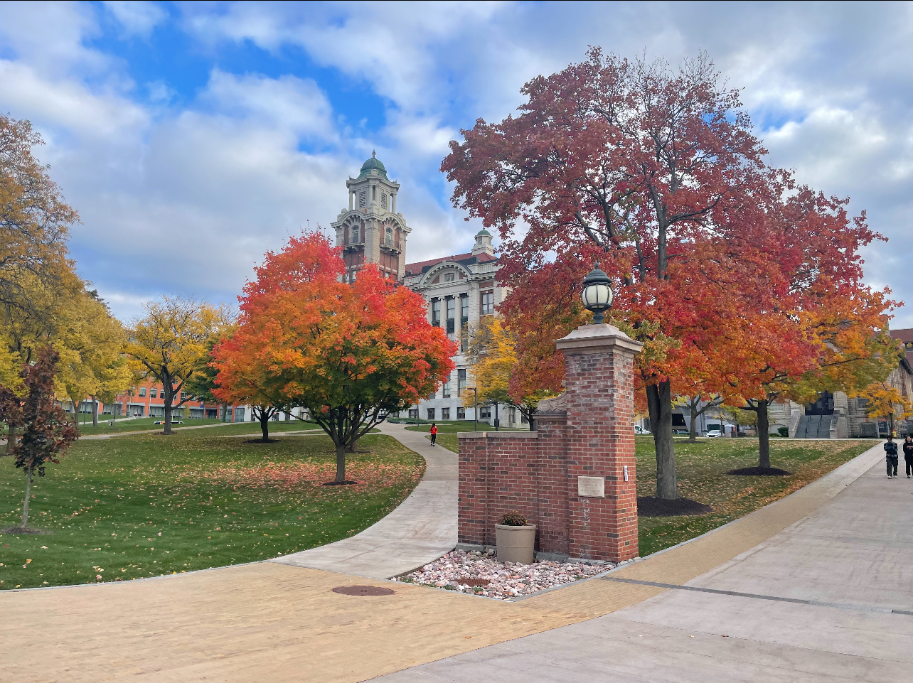
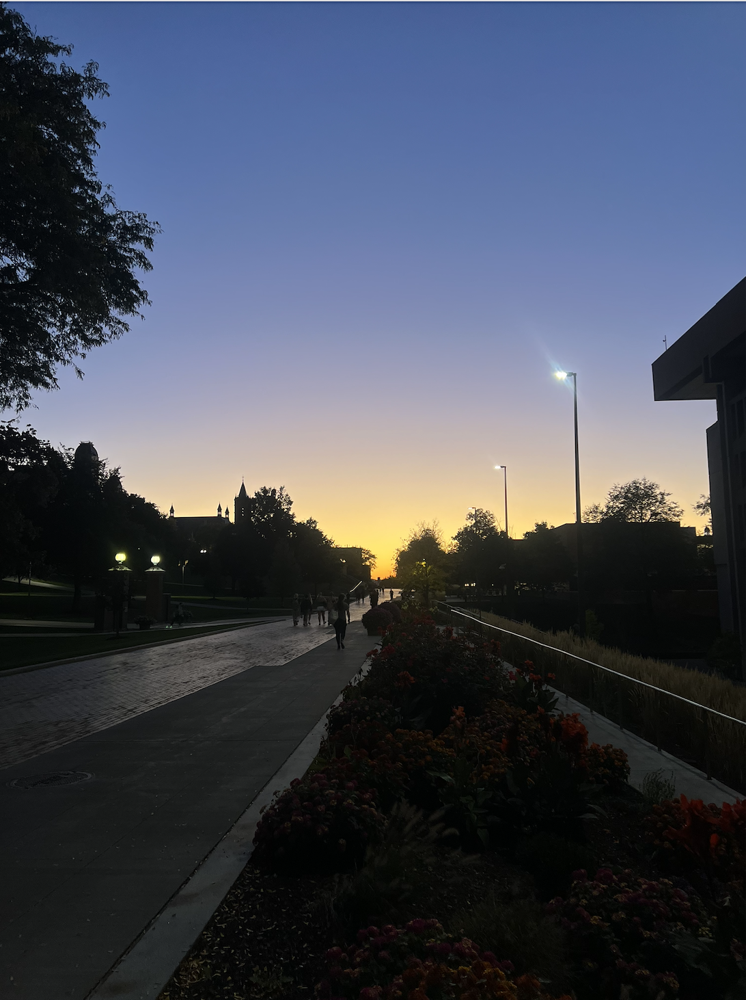
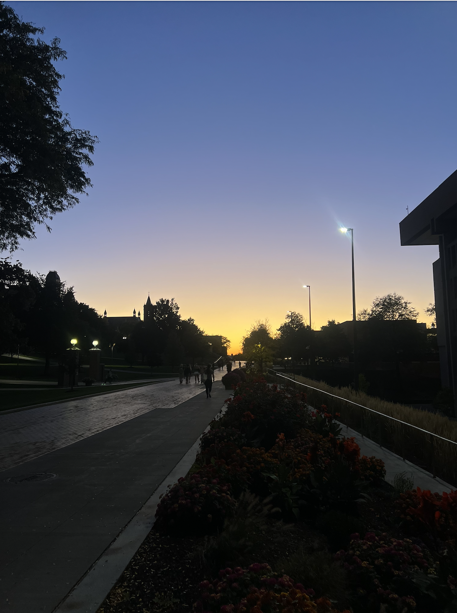
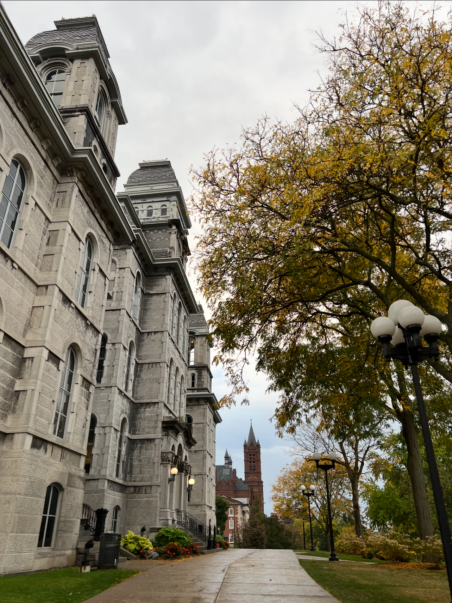
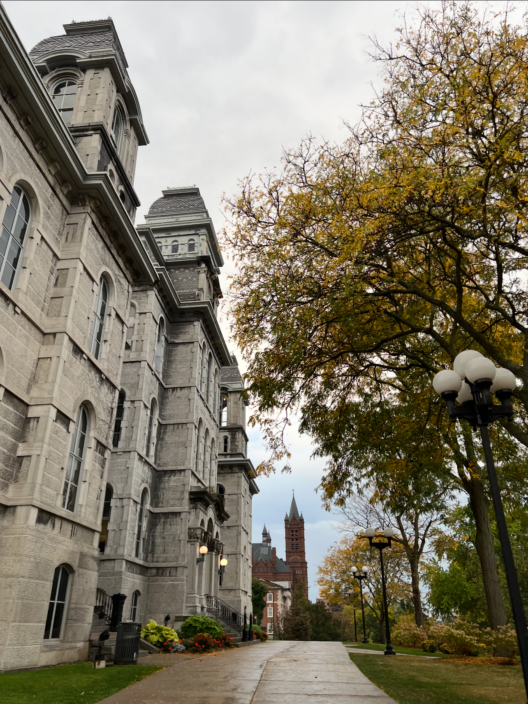
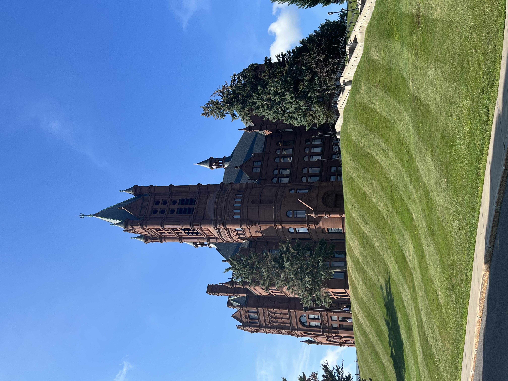
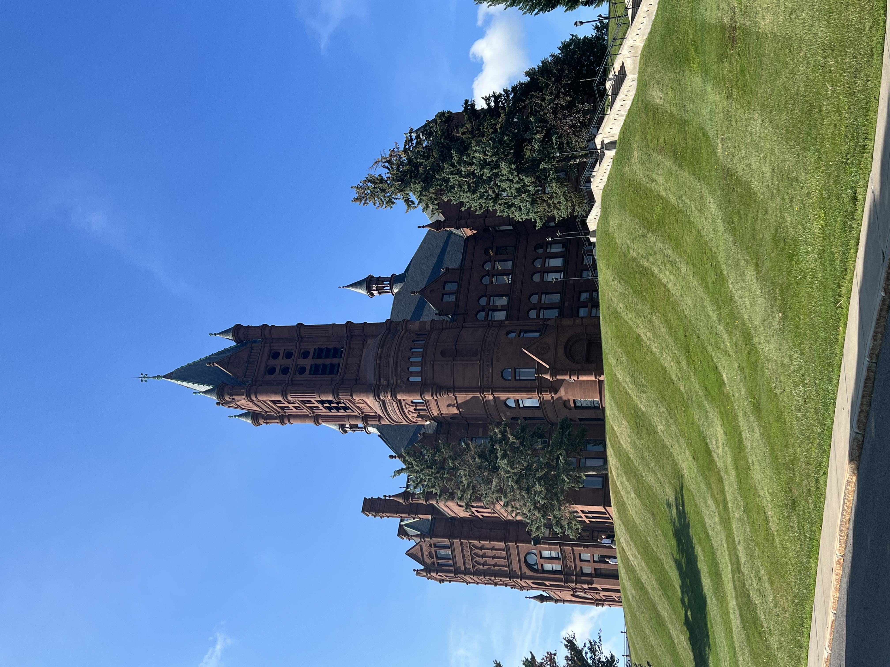
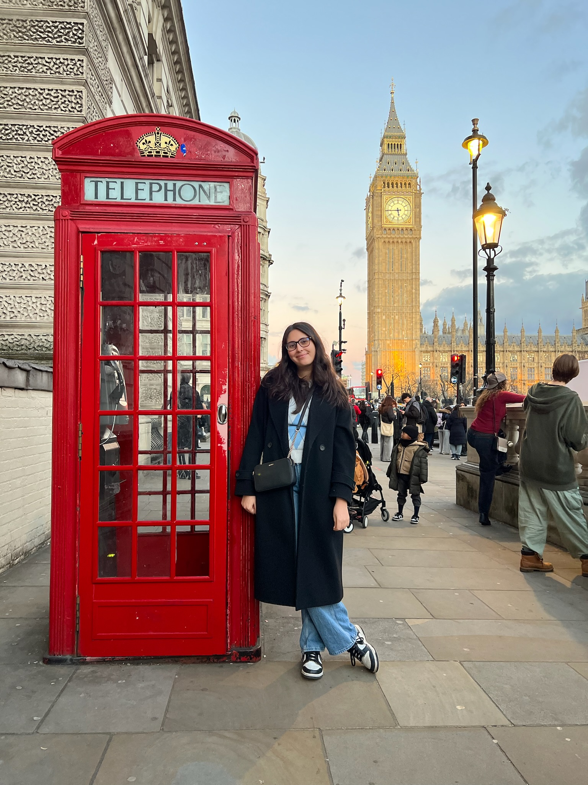

THIS WILL BE AN IMAGE CAROUSEL!
 

 



 


WHO AM I?
Hi! My name is Ines, and I’m a student at Syracuse University double majoring in Economics and Data
Analytics with a minor in Psychology. When I first got here my freshman year, I was overwhelmed by the
size of our campus, the number of student organizations, and just navigating college in general. Now
that I’m a senior (they’re not lying when they say that time flies by), I have a better handle on what it
means to be a student at Syracuse University, and I’ve figured out college so that you don’t have to on
your own! This site is where I’ll be documenting everything, I wish I knew as freshman, including my
survival guide to freshman year, tips, and recommendations. Enjoy!


A GLIMPSE OF SYRACUSE UNIVERSITY
Syracuse University is a private university in Syracuse, New York (aka upstate NY, so get ready for long
winters). It’s home to 13 schools and colleges, more than 300 student organizations, over 200 majors,
and a unique mascot, Otto the Orange! Whether you’re watching a game at the Dome, attending one of
our many free student events, or grabbing a bite on Marshall Street, there’s always something going on!
FROM ONE STUDENT TO ANOTHER
As an international student from Morocco, I was nervous to move to a college alone and far away from
big cities. I was apprehending the typical things: choosing a major (I came here as an undecided
student), making friends, living in a dorm, and making the most of my education. However, the first
couple of days of Orientation Week confirmed that I had made the best decision for me. Although it
took me a couple of weeks to get into a routine, adapt to college-level courses, and find my place on
campus, it only took two days to establish that I had found my new home.
During my sophomore year, I was a Peer Mentor to two groups of international students. I would meet
with them weekly and share information about important school resources like DegreeWorks and
BlackBoard, but I would also share my personal advice on life as an SU student. Therefore, I’m to share
that advice with the rest of you!
Now that I’m starting my last year, I would honestly rank my experience at SU a 10/10. I’ve made
lifelong friends, joined incredible student organizations, networked with faculty and industry
professionals, and even studied abroad! I’ve compiled all my knowledge about SU into this website in
the hopes that your experience can be just as good as mine.